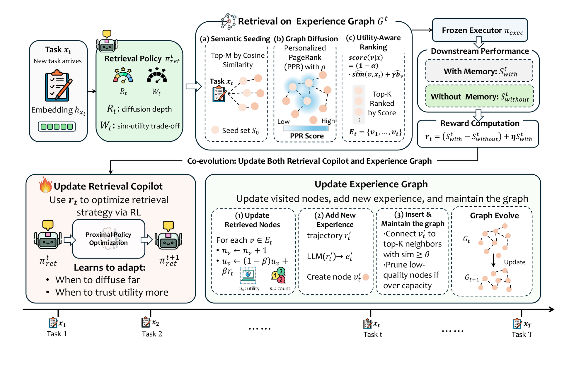
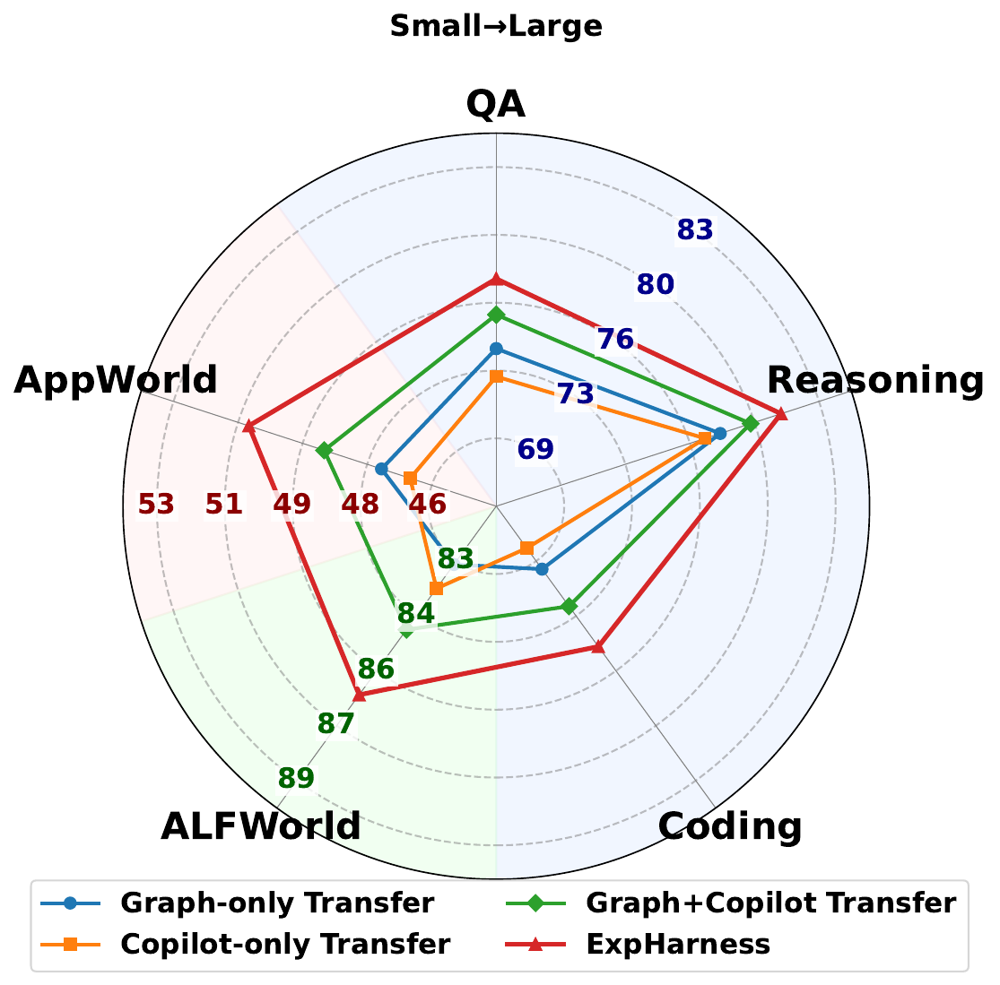
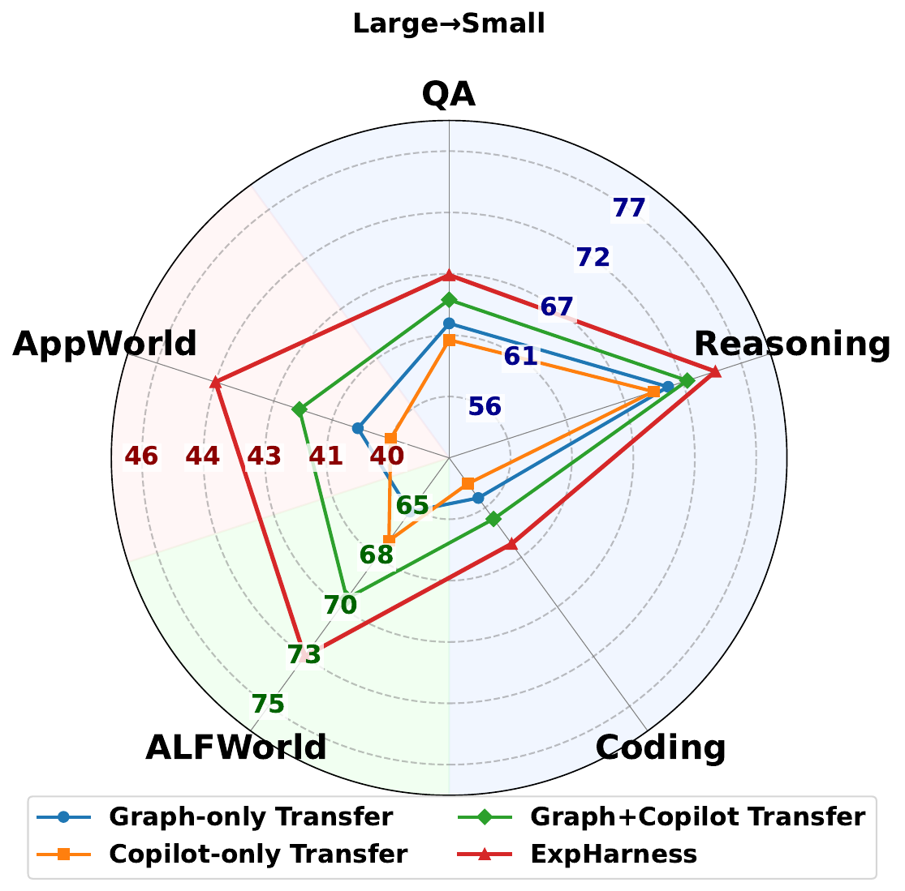
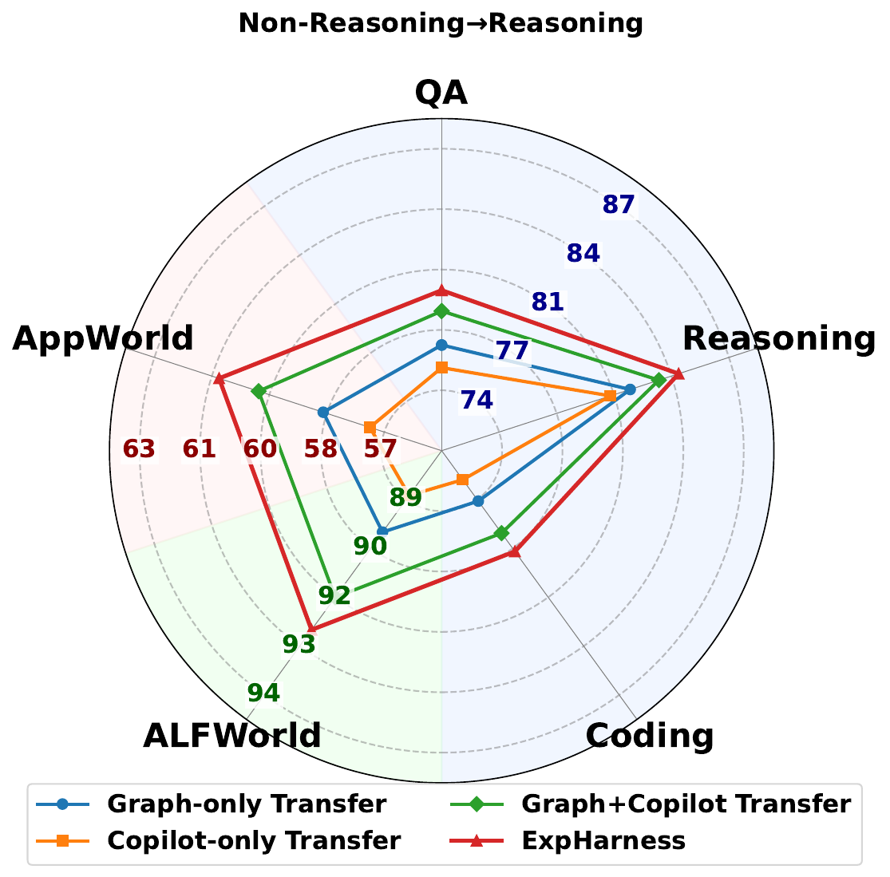
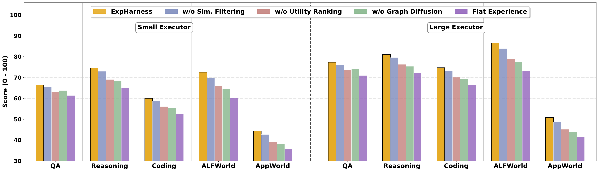

Small / large executors. ExpSuite-Static: Llama-3.2-3B-Instruct / Llama-3.1-8B-Instruct. ExpSuite-Agentic: Qwen3-32B / Gemini-3.1-Flash-Lite. Gains are relative improvements (Sours − Sbaseline) / Sbaseline of the averaged score.
Overview
LLM agents increasingly operate within a harness—the scaffolding that determines what enters the executor's context—yet the experience they accumulate across tasks rarely flows back into this harness. Fine-tuning the executor on collected experience ties what was learned to one model, and has to be repeated whenever a stronger or more suitable executor appears.
ExpHarness is a learnable experience harness that improves frozen and replaceable LLM executors without modifying their parameters. It distills trajectories into reusable skills and failure lessons within a self-evolving experience graph, and trains a lightweight retrieval copilot that decides, per task, how broadly to explore the graph and how strongly to favor historically useful experiences over merely similar ones. The copilot is optimized with reinforcement learning from a utility-grounded reward, and the same reward updates the graph during training.
Successful trajectories become skills, failed ones become lessons. Each entry stores its text, embedding, a utility estimate and a retrieval count, and is linked to its semantically similar neighbors.
A small LM (Qwen2.5-3B-Instruct) reads the task and outputs two controls: R sets how far graph diffusion spreads from the seeds, W trades semantic similarity for historical utility. It never answers the task itself.
The executor is run with and without the retrieved experiences. The score gain plus the absolute score trains the copilot with PPO and updates the utility of every retrieved node.
Method

Embed the task with Contriever and take the top-m most similar experiences as seeds.
Personalized PageRank from the seeds. A larger R means a higher restart probability, so retrieval stays local; a smaller R lets it spread across the graph.
Rank candidates by (1−λ)·similarity + λ·UCB(utility, count), with λ = W/100, and pass the top-K to the executor.
Benchmark
ExpSuite tests whether experience reuse helps both single-turn reasoning and long-horizon interaction. ExpSuite-Static uses Llama-3.2-3B-Instruct and Llama-3.1-8B-Instruct as executors; ExpSuite-Agentic uses Qwen3-32B and Gemini-3.1-Flash-Lite. All executors stay frozen and no manually curated few-shot examples are used.
Main Results
We compare against a no-memory executor, retrieval-centric experience learning methods (ReasoningBank, ExpeL, LightMem, Mem0, AWM, MemRL), LLM-centric methods (IRCoT, Search-o1, S3) and, for the agentic setting, prompt-based agents (ReAct, Reflexion). All experience-based baselines receive the same historical trajectories whenever applicable.
| Method | Question Answering | Reasoning | Coding | Weighted Avg. | |||||||
|---|---|---|---|---|---|---|---|---|---|---|---|
| ARC-C | CSQA | GPQA-D | MMLU | OBQA | GSM8K | GSM-Sym | MATH | HumanEval+ | MBPP+ | ||
| No Memory | 51.56 | 54.44 | 18.33 | 42.89 | 54.22 | 69.56 | 60.44 | 37.56 | 43.59 | 38.75 | 51.88 |
| Retrieval-Centric Experience Learning Baselines | |||||||||||
| ReasoningBank | 71.78 | 61.56 | 21.67 | 54.00 | 72.67 | 70.44 | 56.44 | 45.56 | 51.28 | 57.50 | 60.83 |
| ExpeL | 44.67 | 57.78 | 16.67 | 46.44 | 43.11 | 77.11 | 80.44 | 23.33 | 20.51 | 22.50 | 51.49 |
| LightMem | 71.56 | 64.00 | 26.67 | 58.00 | 72.89 | 44.89 | 42.00 | 49.11 | 48.72 | 42.50 | 56.47 |
| Mem0 | 68.00 | 59.56 | 28.33 | 56.44 | 65.78 | 52.00 | 39.78 | 28.22 | 41.03 | 60.00 | 52.42 |
| AWM | 72.44 | 60.44 | 15.00 | 53.33 | 69.33 | 55.33 | 38.89 | 45.78 | 53.85 | 60.00 | 55.81 |
| MemRL | 67.33 | 60.00 | 23.33 | 40.22 | 67.11 | 83.78 | 68.00 | 55.33 | 46.15 | 57.50 | 62.06 |
| LLM-Centric Experience Learning Baselines | |||||||||||
| IRCoT | 62.67 | 59.78 | 15.00 | 38.00 | 63.33 | 77.78 | 72.67 | 29.56 | 51.28 | 50.00 | 56.65 |
| Search-o1 | 66.67 | 60.22 | 28.33 | 50.00 | 62.44 | 78.44 | 73.33 | 38.44 | 30.77 | 28.75 | 59.63 |
| S3 | 64.89 | 59.11 | 23.33 | 44.00 | 64.00 | 82.00 | 74.00 | 53.11 | 48.72 | 55.00 | 61.94 |
| ExpHarness (Ours) | 74.00 | 63.11 | 26.67 | 60.00 | 74.00 | 84.89 | 82.00 | 57.11 | 56.41 | 62.50 | 69.57 |
| Method | Question Answering | Reasoning | Coding | Weighted Avg. | |||||||
|---|---|---|---|---|---|---|---|---|---|---|---|
| ARC-C | CSQA | GPQA-D | MMLU | OBQA | GSM8K | GSM-Sym | MATH | HumanEval+ | MBPP+ | ||
| No Memory | 70.22 | 63.11 | 23.33 | 53.11 | 69.78 | 70.89 | 62.67 | 39.78 | 43.59 | 58.75 | 60.41 |
| Retrieval-Centric Experience Learning Baselines | |||||||||||
| ReasoningBank | 82.22 | 70.44 | 28.33 | 63.78 | 78.44 | 80.67 | 74.22 | 47.56 | 58.97 | 62.50 | 69.93 |
| ExpeL | 82.67 | 75.78 | 21.67 | 66.67 | 82.67 | 91.11 | 88.89 | 45.78 | 35.90 | 66.25 | 74.53 |
| LightMem | 81.56 | 72.22 | 23.33 | 60.89 | 80.89 | 81.56 | 72.00 | 49.11 | 51.28 | 68.75 | 70.02 |
| Mem0 | 83.33 | 70.00 | 20.00 | 67.11 | 80.67 | 90.67 | 86.00 | 47.78 | 64.10 | 77.50 | 74.02 |
| AWM | 81.56 | 74.00 | 18.33 | 60.22 | 78.67 | 81.78 | 76.44 | 47.11 | 64.10 | 76.25 | 70.47 |
| MemRL | 84.44 | 73.78 | 23.33 | 67.56 | 84.00 | 93.33 | 80.00 | 56.44 | 35.90 | 65.00 | 75.34 |
| LLM-Centric Experience Learning Baselines | |||||||||||
| IRCoT | 83.11 | 75.33 | 30.00 | 67.11 | 82.22 | 88.67 | 84.00 | 52.00 | 48.72 | 71.25 | 74.80 |
| Search-o1 | 81.33 | 71.78 | 28.33 | 64.44 | 78.00 | 89.33 | 84.67 | 48.00 | 46.15 | 63.75 | 72.54 |
| S3 | 82.00 | 73.56 | 26.67 | 65.56 | 81.56 | 90.89 | 86.00 | 52.89 | 58.97 | 72.50 | 74.89 |
| ExpHarness (Ours) | 86.00 | 75.11 | 28.33 | 68.89 | 86.00 | 95.11 | 90.00 | 58.00 | 66.67 | 78.75 | 78.76 |
Accuracy (QA), exact match (reasoning) and Pass@1 (coding), in %. The weighted average weights each benchmark by its number of test instances. Bold: best; underline: second best.
| Method | ALF-Seen | ALF-Unseen | AppWorld Test-N | AppWorld Test-C | Average | |||||
|---|---|---|---|---|---|---|---|---|---|---|
| SR | #Steps↓ | SR | #Steps↓ | PR | #Steps↓ | PR | #Steps↓ | Score | #Steps↓ | |
| No Memory | 19.3 | 41.2 | 35.8 | 42.5 | 30.1 | 30.8 | 21.6 | 31.5 | 25.1 | 34.7 |
| Prompt-based Agentic Baselines | ||||||||||
| ReAct | 31.4 | 36.7 | 47.0 | 38.6 | 30.0 | 32.2 | 21.8 | 31.9 | 28.9 | 33.8 |
| Reflexion | 23.6 | 40.6 | 40.3 | 38.7 | 31.6 | 31.3 | 21.9 | 32.7 | 26.9 | 34.6 |
| Retrieval-Centric Experience Learning Baselines | ||||||||||
| ReasoningBank | 37.9 | 35.3 | 26.1 | 42.6 | 29.4 | 25.6 | 22.2 | 24.3 | 26.8 | 29.2 |
| ExpeL | 54.3 | 27.5 | 29.1 | 41.4 | 26.7 | 35.1 | 28.2 | 25.6 | 32.3 | 30.2 |
| LightMem | 49.2 | 29.6 | 25.0 | 39.2 | 28.5 | 34.2 | 23.7 | 37.5 | 29.0 | 35.8 |
| Mem0 | 30.0 | 37.3 | 18.7 | 42.8 | 20.8 | 33.4 | 15.7 | 35.2 | 19.5 | 36.4 |
| AWM | 37.9 | 35.3 | 32.8 | 40.1 | 28.0 | 28.8 | 22.8 | 33.0 | 27.8 | 33.7 |
| MemRL | 25.7 | 40.3 | 20.2 | 49.6 | 45.2 | 18.6 | 28.9 | 24.7 | 30.2 | 29.9 |
| LLM-Centric Experience Learning Baselines | ||||||||||
| IRCoT | 33.6 | 37.9 | 27.6 | 40.6 | 52.8 | 11.4 | 36.1 | 17.8 | 37.6 | 23.4 |
| Search-o1 | 32.1 | 38.0 | 11.2 | 47.3 | 45.4 | 16.5 | 26.5 | 14.2 | 28.7 | 23.7 |
| S3 | 58.6 | 23.5 | 42.5 | 22.5 | 55.4 | 9.7 | 35.0 | 15.0 | 44.0 | 16.5 |
| ExpHarness (Ours) | 70.0 | 20.0 | 75.4 | 18.0 | 57.1 | 8.8 | 39.3 | 13.6 | 53.4 | 14.4 |
| Method | ALF-Seen | ALF-Unseen | AppWorld Test-N | AppWorld Test-C | Average | |||||
|---|---|---|---|---|---|---|---|---|---|---|
| SR | #Steps↓ | SR | #Steps↓ | PR | #Steps↓ | PR | #Steps↓ | Score | #Steps↓ | |
| No Memory | 62.7 | 27.9 | 64.9 | 26.3 | 34.2 | 33.0 | 23.2 | 36.6 | 38.3 | 32.9 |
| Prompt-based Agentic Baselines | ||||||||||
| ReAct | 65.7 | 24.1 | 63.4 | 25.1 | 32.7 | 24.8 | 32.1 | 16.1 | 42.6 | 20.5 |
| Reflexion | 63.1 | 23.3 | 60.4 | 23.7 | 48.2 | 21.9 | 31.1 | 15.6 | 44.2 | 19.4 |
| Retrieval-Centric Experience Learning Baselines | ||||||||||
| ReasoningBank | 67.2 | 29.1 | 81.3 | 24.1 | 45.3 | 23.1 | 41.2 | 25.5 | 52.5 | 25.4 |
| ExpeL | 71.6 | 21.4 | 63.4 | 28.7 | 43.6 | 21.1 | 29.9 | 28.3 | 44.6 | 25.8 |
| LightMem | 70.1 | 27.8 | 70.9 | 27.8 | 34.2 | 31.1 | 29.7 | 34.2 | 43.6 | 31.6 |
| Mem0 | 58.2 | 30.6 | 63.4 | 22.4 | 32.7 | 31.5 | 22.9 | 34.8 | 36.9 | 31.5 |
| AWM | 73.1 | 24.7 | 80.6 | 18.8 | 50.7 | 20.9 | 31.5 | 25.8 | 49.7 | 23.6 |
| MemRL | 61.9 | 28.9 | 71.6 | 26.1 | 40.5 | 13.5 | 31.7 | 16.7 | 44.6 | 19.5 |
| LLM-Centric Experience Learning Baselines | ||||||||||
| IRCoT | 75.4 | 27.0 | 87.3 | 19.6 | 46.9 | 18.7 | 34.9 | 25.4 | 52.0 | 23.4 |
| Search-o1 | 76.1 | 22.4 | 79.4 | 23.5 | 52.3 | 20.7 | 39.8 | 24.6 | 54.3 | 23.3 |
| S3 | 77.1 | 21.8 | 80.6 | 21.5 | 53.0 | 18.5 | 40.8 | 22.0 | 55.3 | 21.1 |
| ExpHarness (Ours) | 85.0 | 17.6 | 88.1 | 17.0 | 57.1 | 12.8 | 48.4 | 14.8 | 62.3 | 15.2 |
Success rate (SR) on ALFWorld and pass rate (PR) on AppWorld, in %, with the average number of environment interaction steps (lower is better). The average is weighted across all test tasks.
ExpHarness improves the weighted average over the strongest baseline by 12.1% / 4.5% on ExpSuite-Static (vs. MemRL) and by 21.4% / 12.7% on ExpSuite-Agentic (vs. S3) with the small / large executor, while using 12.7% / 21.6% fewer interaction steps than the most step-efficient baselines. Gains are larger for the smaller executors and for the interactive tasks.
Transfer
Because all learning resides in the harness, a harness trained with one executor can be reused when the executor is replaced. We transfer the experience graph only, the copilot only, or both, and compare with ExpHarness trained directly on the target executor. For the reasoning setting we transfer from Llama-3.1-8B-Instruct to DeepSeek-R1-Distill-Llama-8B (static) and from Gemini-3.1-Flash-Lite to Claude-Sonnet-4 (agentic).



Ablation
We ablate four experience-retrieval design choices across QA, Reasoning, Coding, ALFWorld and AppWorld: w/o Similarity Filtering (no near-duplicate filtering at insertion), Flat Experience (a flat pool retrieved purely by similarity), w/o Graph Diffusion (retrieve only from the semantic seeds) and w/o Utility Ranking (rank by similarity only). Every variant falls below the full method.

Code & Data
The release contains the experience graph server, the copilot PPO trainer (built on verl), executors for ALFWorld, AppWorld and the static benchmarks, processed data splits and the cold-start experience graphs. Executors are plain API calls (Gemini, NVIDIA NIM, any OpenAI-compatible endpoint such as vLLM, or Claude).
# install git clone https://github.com/ulab-uiuc/ExpHarness && cd ExpHarness pip install torch==2.4.0 vllm==0.6.3 && pip install -r requirements.txt # train the retrieval copilot (the executor stays frozen) bash run/alfworld/train.sh bash run/appworld/start_servers.sh && bash run/appworld/train.sh bash run/static/train.sh all # all | reasoning | coding # evaluate a checkpoint together with its evolved graph bash run/alfworld/eval.sh checkpoints/expharness_alfworld_42 300
@article{feng2026expharness,
title = {ExpHarness: Model-Agnostic Experience Learning through a Trainable Harness},
author = {Feng, Tao and Ye, Chongrui and Yu, Fangxu and Luo, Tianyang and Xu, Jingjun and Xu, Xueqiang and Zhang, Haozhen and Zhang, Weizhi and Lei, Zijie and Hua, Zhigang and Xie, Yan and Yang, Shuang and You, Jiaxuan},
year = {2026}
}